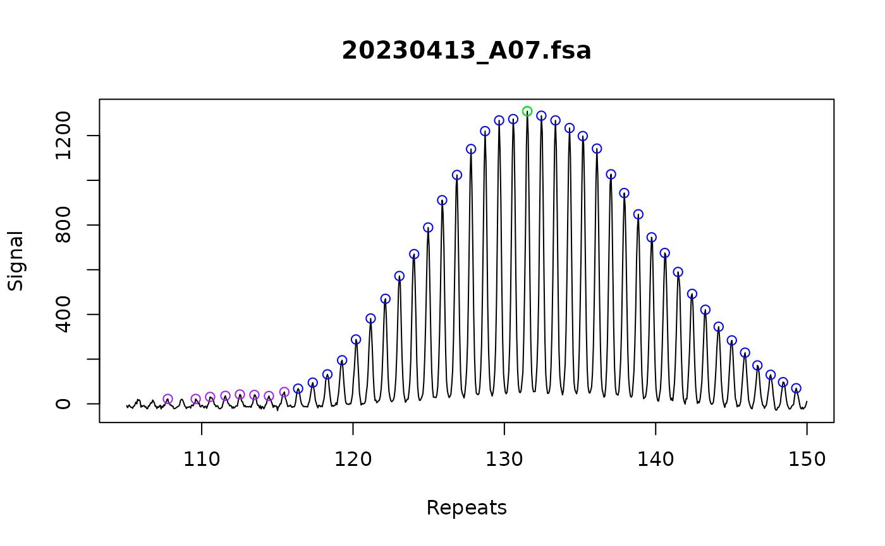

Plot sample traces
plot_traces.RdPlot the raw trace data
Usage
plot_traces(
fragments_list,
show_peaks = TRUE,
n_facet_col = 1,
sample_subset = NULL,
xlim = NULL,
ylim = NULL,
x_axis = NULL,
height_color_threshold = 0.05
)Arguments
- fragments_list
A list of fragments_repeats or fragments_trace objects containing fragment data.
- show_peaks
If peak data are available, TRUE will plot the peaks on top of the trace as dots.
- n_facet_col
A numeric value indicating the number of columns for faceting in the plot.
- sample_subset
A character vector of unique ids for a subset of samples to plot
- xlim
the x limits of the plot. A numeric vector of length two.
- ylim
the y limits of the plot. A numeric vector of length two.
- x_axis
A character indicating what should be plotted on the x-axis, chose between
sizeorrepeats. If neither is selected, an assumption is made based on if repeats have been called.- height_color_threshold
Threshold relative to tallest peak to color the dots (blue above, purple below).
Details
A plot of the raw signal by bp size. Red vertical line indicates the scan was flagged as off-scale. This is in any channel, so use your best judgment to determine if it's from the sample or ladder channel.
If peaks are called, green is the tallest peak, blue is peaks above the height threshold (default 5%), purple is below the height threshold. If force_whole_repeat_units is used within call_repeats(), the called repeat will be connected to the peak in the trace with a horizontal dashed line.
The index peak will be plotted as a vertical dashed line when it has been set using assign_index_peaks().
Examples
fsa_list <- lapply(cell_line_fsa_list[1], function(x) x$clone())
find_ladders(fsa_list, show_progress_bar = FALSE)
fragments_list <- find_fragments(fsa_list,
min_bp_size = 300
)
find_alleles(
fragments_list
)
# Simple conversion from bp size to repeat size
call_repeats(
fragments_list
)
plot_traces(fragments_list, xlim = c(105, 150))
